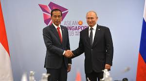
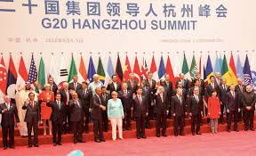
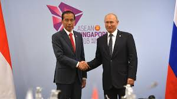
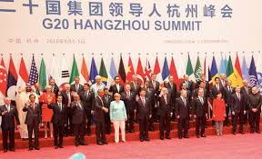

Hello! Welcome to Ellie's Website about Kerjasama Internasional! Di web ini, kita dapat melihat pengertian kerjasama, 3 macam kerjasama International yaitu:
- Kerjasama Bilateral(kerjasama antara 2 negara)
- Kerjasama Regional (kerjasama di bidang ekonomi dengan lebih dari 2 negara di suatu wilayah)
- Kerjasama Multilateral (kerjasama yang dilakukan oleh bangsa-bangsa di dunia tanpa melihat wilayah untuk kepentingan tertentu)
Kita juga dapat melihat tentang pengertian SDGs, apa yang ada terkait program SDGs, dan 17 tujuan yang disampaikan.